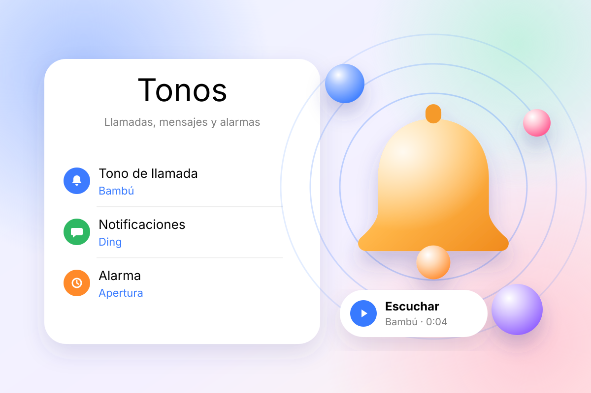
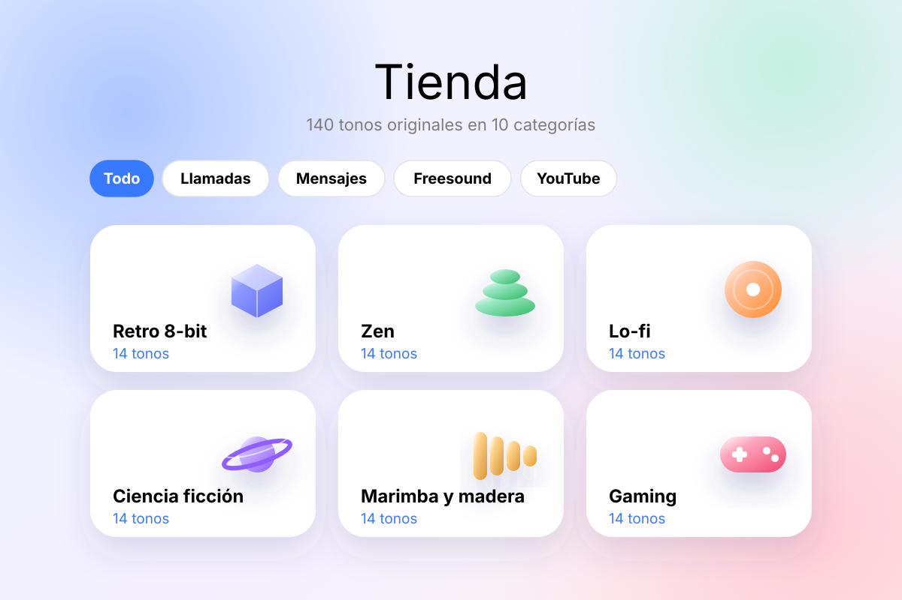
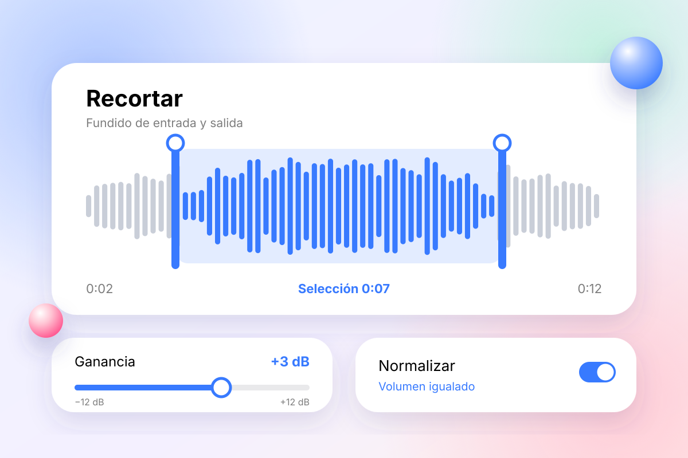
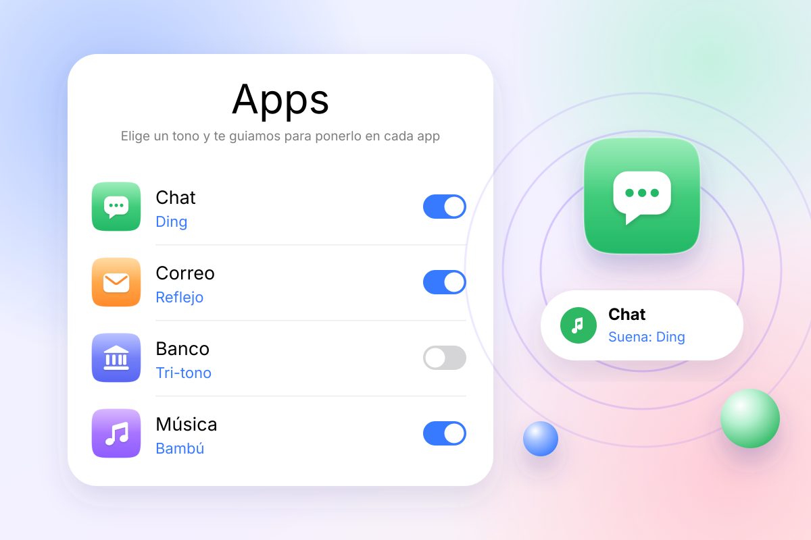

Estilo One UI
Un tono para cada app
Cabecera alta para leer, todo lo demás abajo, al alcance del pulgar. Zentones se viste de One UI cuando lo abres en un Samsung.
En la app
- Llamadas y mensajesUn tono distinto para cada app
- Tienda140 tonos originales en 10 categorías
- Editor de recortesFundidos, normalizar y ±12 dB
- Desde YouTubeBusca una canción, baja el audio y córtalo
Tonos
Llamadas, mensajes y alarmas
Sistema
- Tono de llamadaBambú
- NotificacionesGota
- AlarmaApertura
Crear
- Desde YouTubeBusca una canción, baja el audio y córtalo
- Desde un audio del móvilRecorta cualquier canción o sonido que tengas
De serie · Llamada
- BambúMarimba de madera, alegre y saltarina
- ReflejoArpegio de kalimba sobre acordes suaves
- AperturaEscalas de marimba que se abren hacia arriba
Tienda
140 tonos en el catálogo · Freesound · YouTube
Catálogo Zentones
- PíxelLlamada · 7,2 s · Retro 8-bit
- CartuchoMensaje · 2,2 s · Retro 8-bit
- MedianocheLlamada · 7,2 s · Terror nocturno
- Onda mediaLlamada · 7,9 s · Radio antigua
- HologramaMensaje · 2,6 s · Ciencia ficción
Apps
Elige un tono y te guiamos para ponerlo en cada app
Ya configuradas
- ChatLlamada: Bambú · Mensaje: Gota
- MensajeríaMensaje: Tri-tono
Todas las apps
- Banco
- Cámara
- ChatLlamada: Bambú · Mensaje: Gota
- Correo
- MensajeríaMensaje: Tri-tono
- Música
Ajustes
Estilo de interfaz
- Según mi móvilSamsung → One UI
Apariencia
- AutomáticoSigue al sistema
- Claro
- Oscuro
Actualizaciones
- Buscar al abrirMira GitHub cada vez que abres la app
Prueba aquí
- Fundido de salidaActivado
- Normalizar volumenLo deja al máximo sin distorsionar
Tonos
Llamadas, mensajes y alarmas
Elige el tono general del sistema entre los 18 de serie o los tuyos. Arriba lo lees; abajo, con el pulgar, eliges.

Tono de llamada
De serie
- BambúMarimba de madera, alegre y saltarina
- ReflejoArpegio de kalimba sobre acordes suaves
- AperturaEscalas de marimba que se abren hacia arriba
- FaroPulsos de radar, imposible no oírlo
- BrisaPad cálido con melodía de kalimba
- ClásicoCampanilla de teléfono de toda la vida
De serie · Mensaje
- Ding
- Tri-tono
- Nota
- Cristal
- Burbuja
- Acorde
- Campanilla
- Aviso
- Gota
- Bambú corto
Tienda
140 tonos originales
Diez categorías, de Retro 8-bit a Zen. Si no te basta, busca en Freesound o trae el audio de YouTube. Toca el botón azul para escucharlos aquí mismo.
Catálogo Zentones
- Caja de músicaLlamada · 7,5 s · Terror nocturno
- Emisora fantasmaMensaje · 1,6 s · Radio antigua
- TeletransporteMensaje · 2,3 s · Ciencia ficción
- CaféLlamada · 6,6 s · Lo-fi
- IslaMensaje · 1,4 s · Marimba y madera
- LotoLlamada · 8,7 s · Zen
- LogroLlamada · 7,1 s · Gaming
Al descargar un tono se abre el editor para recortarlo antes de guardarlo. Respeta la licencia de cada sonido.

Más fuentes
- Buscar «radio» en YouTubeBaja el audio y córtalo como quieras
- API key de FreesoundSin configurar · gratis en freesound.org
Editor
Recorta, funde y guarda
Dos tiradores sobre la onda, fundidos de entrada y salida, normalizar y ganancia de −12 a +12 dB. Todo en una hoja que sube desde abajo.

Editar y guardar
0:00,0 → 0:07,2 · 7,2 s
Arrastra cerca de un borde para moverlo, o toca para colocarlo.
Ajustes
- Fundido de entrada
- Fundido de salida
- Normalizar volumenLo deja al máximo sin distorsionar
Usar como
- Tono de llamadaSuena en bucle
- Tono de mensajeMejor si dura menos de 3 s
Apps
Cada app, su tono
Eliges el tono, Zentones lo deja listo en tu móvil y te dice paso a paso dónde seleccionarlo dentro de cada app.
Chat
Elige qué tono quieres para Chat. Zentones lo deja listo en tu móvil y te dice dónde seleccionarlo.
- Tono de llamadaBambú
- Tono de mensajeGota
Mensajería
Listo, el tono ya está en tu móvil. Ahora selecciónalo en Mensajería:
- Toca «Abrir ajustes de notificaciones» aquí abajo
- Entra en la categoría que quieras (por ejemplo «Mensajes» o «Chats»)
- Toca «Sonido»
- Elige «Zentones · Tri-tono» en la lista
Los nombres pueden cambiar un poco según la app y tu versión de Android.

Ya configuradas
- ChatLlamada: Bambú · Mensaje: Gota
- MensajeríaMensaje: Tri-tono
- BancoMensaje: Aviso
Piezas
Hecho con piezas de One UI
Interruptores, botones en píldora, tarjetas con separadores sangrados, barra flotante de cristal y menús que difuminan lo que hay detrás.
Interruptores
- Buscar al abrirMira GitHub cada vez que abres la app
- Fundido de entrada
- OscuroFondo negro puro
Permisos
- Cambiar tonos del sistemaPara los tonos generalesActivar
- Instalar actualizacionesPara actualizar desde GitHubActivo
- Repositorioluckicla/ZenTones
Menú de cristal
Botones
Barra flotante
Tarjetas
Llévate Zentones
Gratis, para Android 10 o superior. Al abrirla en un Samsung se pone sola en estilo One UI; en Ajustes puedes elegir cualquiera de los cuatro.
Descargar APKSe descarga desde las Releases de GitHub. Android te pedirá permiso para instalar apps de esta fuente.